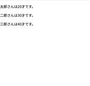

SO Technologies 開発者ブログ
https://developer.so-tech.co.jp/
中堅・中小企業向けマーケティングテクノロジーの提供をしているSO Technologies で、プロダクト開発に関わる人たちのブログです。 現在、積極採用中！
フィード
Googleのメール送信者のガイドラインへの対応〜ATOMの場合
SO Technologies 開発者ブログ
こんにちは。ATOM 事業部エンジニアのyuinaです。 2023 年 10 月 3 日、Google はスパム対策強化のため、Gmail へ送るメールが満たすべき条件を 2024 年 2 月から厳しくすると発表しました。 support.google.com Google からのガイドラインの公開もあり、各社対応に追われていたと思います。 ATOM でもメール送信を行う機能を持っているため、この対応を行う必要がありました。 今回は私が担当した、ATOMリニューアル版での対応について書いていこうと思います。 Google のメール送信者のガイドラインへの対応 Google からのガイドラインを…
9日前

Reactの状態管理を簡単にする@tanstack/react-queryについて
SO Technologies 開発者ブログ
はじめに こんにちは。AG-Boost事業本部の宇野です。 現在チームで開発しているサービスはReactを採用しており、状態管理ライブラリはReduxを使用しています。私は今までRedux以外の状態管理ライブラリを触ったことがありません。Redux以外の状態管理ライブラリには以前から興味があったため、今回@tanstack/react-queryを触ってみようと思いました。 この記事では@tanstack/react-queryの使い方について記述しています。 tanstack.com 環境 React 18.2.0 @tanstack/react-query 5.22.2 インストール np…
9日前
ビルドシステム大転換！webpackからViteへの移行実践記
SO Technologies 開発者ブログ
はじめに こんにちは。AG-Boost事業本部のF石崎です。 この記事では、従来webpackを使用していたプロジェクトのビルドシステムをViteに置き換えた過程について書こうと思います。この記事が、同様の転換を検討しているエンジニアの方への参考になれば幸いかもしれません。 webpackからViteへの移行の動機 webpackのビルド時間に対する不満 開発サーバーの起動時間の長さ（プロジェクトのサイズが大きくなってより顕著に感じるようになった） モダンなフロントエンド開発ツールの進化に興味を持ったから Viteとは まず、Viteとは何か、その特徴を簡単に説明します。Viteは、現代のJa…
13日前

既存の業務ツールやサービスの使い方について見直してみた
SO Technologies 開発者ブログ
こんにちは、ATOM事業本部のプロダクト開発グループの松尾です。バックエンドを中心に開発を行なっています。 広告媒体の実績値取得やレポートの生成などを中心に開発しています。 先日、社内PCのリース期間が近づいてきたとのお知らせが来ました。 新しいモデルが届くみたいなので、とても楽しみにしています。 届いた後の移行作業について考えていました。その時、業務ツールやサービスの利用方法もこの機会に見直したくなってきました。 普段のエンジニアの業務では、コードを書くだけでなく、情報を検索し収集している時間も多いかと思います。 今回はその情報収集にスポットを当てて、知らない便利な機能はないか調べてみること…
17日前
MySQL 5.7 と 8.0 で日時型の挙動が微妙に違っていた件
SO Technologies 開発者ブログ
こんにちは。 ATOM事業部の田村です。 最近 MySQL 5.7 から 8.0 へのバージョンアップを行う機会があったのですが、 その際に MySQL の日時データ型でちょっと面白い挙動に遭遇しました。 「WHERE 句で日時型カラムに条件を入れて期間で絞り込む」というよくある SQL なのですが、右辺の値に '' （空文字） を指定した場合に、5.7 ではエラーにならず 8.0 では SQL エラーになるというものです。 mysql> SELECT * FROM table WHERE date_column = ''; ERROR 1525 (HY000): Incorrect DATE…
1ヶ月前
戦略から実践へ。データエンジニアが事業部異動で見えたこと
SO Technologies 開発者ブログ
はじめに こんにちは。 ATOM事業部でデータエンジニアをしている小宮です。 2023年6月までは事業部横断のデータ部署（以下データ戦略室）にいたのですが、 色々あって弊社SaaSのATOM事業部専任でデータを扱うことになりました。 異動後の約半年間で、 データ戦略室に居た頃には見えなかった気づきを得ることができたので今回はそれらを共有したいと思います。 データ戦略室でやっていたこと まず前提として、データ活用推進のために以下のことを行っていました。 社内の点在したデータを1箇所に集める（データ基盤の構築） データ基盤を安定的に保守・運用する データを活かして事業部に貢献する データ基盤を作る…
1ヶ月前
Adobe製品で画像制作：AI機能を使った新しい創造の世界へ
SO Technologies 開発者ブログ
デザイナーの村田です。 2024年のデザイントレンドを調べてみると、サイトの多くに「生成AIの活用」というキーワードが含まれていました。 rotusdesign.com 社内でアーティスティックな画像を生成して使う機会はないので、あくまでも補助的な役割で今後使っていきたいなと思っています。 それにちなみ、今回はAdobe製品のAI機能を使って、画像制作する過程を記事にしたいと思います。 また、この記事のタイトルもはてなブログの「AIタイトルアシスト」機能を活用し決めてみました。 「新しい創造の世界へ」って…恥ずかしい🙈 と思いつつ、修正せずそのままいきたいと思います！ 新しい創造の世界はないか…
2ヶ月前
冬休みの自由工作(?)にDiscordBotを作ってみた
SO Technologies 開発者ブログ
こんにちは。ATOM 事業部エンジニアのyuinaです。 新年一発目のブログということで、あけましておめでとうございます。本年もよろしくお願いいたします。 今回は、年末の自由工作的な感じで Discord の Bot を作ってみたのですが、 思ったよりも簡単に作れたのでその紹介をしていこうと思います。 なぜ作ろうと思ったのか？ Slack の Bot は以前個人的に作っていたものがあったのですが、 元データの提供が終了してしまい、メンテすることもなくなってしまいました。 Slack の Bot はさくっと作ることができる状態ですが、他のツールで Bot 作ったことがないなと思い、一番最初に思い…
2ヶ月前
1年近くひっそりと技術トピックス会なる会を開いている話
SO Technologies 開発者ブログ
はじめに エンジニアの石崎です。 私主催で技術トピックス会という会をひっそりと社内で開催しています。 もうすぐ継続して1年が経つのでこの会について紹介したいと思います。 どんな会？ 新しく知った技術や、最近話題になっている技術について、情報を持ち寄って共有をする会です。 最近はスキップすることが多くなっていますが、毎週開催が目標です。 同じ部署の3,4人で集り、小規模にゆるっと開催しています。 トピックを持ってこないで話を聞くだけでもOK、インフラでもフロントでもどんな話題でもOK、気になる記事と感想を一言添える程度でOKとしています。 開催の目的 目的は情報収集を怠らないようにすることです。…
3ヶ月前
2023年の外部勉強会での発表記録
SO Technologies 開発者ブログ
はじめに こんにちは、ATOM 事業本部のエンジニアの岸田 (@mwudo) です。 集計基盤の機能開発や保守、API サーバー、バッチ処理などを担当しており、ATOM のバックエンド周りを見守っています。趣味はボルダリングで、毎週、そびえ立つ壁に挑戦しています。 2023年は、外部の勉強会での LT 発表を何回か経験しました。 この記事が2023年の12月に投稿されるにあたり、今年行った様々な発表を振り返ってみようと思います。 2023年の発表 2023年に発表したタイトルは以下の通りです。 2023年5月 仕事で使っているものを紹介します 2023年6月 広告代理店向けSaaSの開発をして…
4ヶ月前
AIファーストエディタ「Cursor」で大規模フロントエンド開発
SO Technologies 開発者ブログ
本記事ではAIファーストエディタCursorが、Vue(Nuxt)を使った大規模なWEBアプリの開発現場で活用できるか検証します。
4ヶ月前
失敗パターンから学ぶ、エンジニア新卒採用面接で押さえるポイント
SO Technologies 開発者ブログ
AG-Boost事業部で開発責任者をしている清水です。 以前学生の方向けに採用担当者目線での新卒エンジニア面接についての記事を書かせていただきました。 この3年間ほどエンジニアの新卒面接に携わらせていただき更に知見が増えたのでそのアップデート記事として書こうと思います。人事ではなく開発現場のエンジニアとしての目線で面接をしていて、うーんなんか浅さが見えてしまうなというポイントを書きたいと思います。逆に言えばそこを対策すれば、良い面接ができるのではないでしょうか？ 授業でやった程度で体系的な勉強を一切していない エンジニアになりたいといって就活をしているのに初歩の初歩も勉強できていないパターンで…
4ヶ月前
Raspberry PiでOpenStackクラスター GitHub Actionsでデプロイ編
SO Technologies 開発者ブログ
こんにちは、SREの平です。前回の 『Raspberry PiでOpenStackクラスター ストレージ拡張編』 ( https://developer.so-tech.co.jp/entry/2023/04/19/110000 ) の続編となります。 私の趣味であるOpenStackクラスターの作成方法を、初めての方向けにご説明させてもらってきましたが、今回は仕上げです。GitHub Actionsを使って、私の自宅のOpenStack環境を、自動構築していきます。 まずは前回までの差分で主なものはこちらです。 2023.2 Bobcat対応（2023/10/4リリースに対応しています）。 …
4ヶ月前
Notionの検索性をあげるために行っているシンプルな方法
SO Technologies 開発者ブログ
はじめに こんにちは。CTO室で全社横断のアジャイルコーチとして働いている府川です。 今回はNotionでのちょっとした便利DBをいくつか紹介したいと思います。Notionの運用は閃きと行動次第なところがあるので、普段Notionを使っていて管理方法がしっくりこない人にとって何かしら参考になれば幸いです。 外部リンク集 情報をNotionへ一元管理したい気持ちはあるものの、情報管理をする上で必ずしもNotionが最適というわけではありません。 昔からのフローがあるため移行が難しいもの、表計算やグラフによる可視化が必要なものなど、別サービスを使う方が望ましいケースも多々あります。 でも主軸となる…
4ヶ月前
Next.jsのApp Routerが提供する4つのキャッシュ機能
SO Technologies 開発者ブログ
こんにちは。 新規プロダクト開発に携わっているエンジニアの島田です。 今年2023年の5月にNext.js 13.4がリリースされました。このリリースで、これまでのアーキテクチャ (今ではPages Routerと呼ばれるようになりました) を大幅に刷新した、App Routerが安定版となりました。 上記リンクにある通り非常に情報量の多いリリースとなり、果たしてこのApp Routerを現時点で採用するべきなのかどうかについて、多くのプロジェクトで関心が高まっているかと思います。 この記事ではその採用可否の判断の一助になるよう、App Routerが提供する既存のものから大幅に刷新されたキャ…
5ヶ月前
バックエンドエンジニアにお勧めしたいフロントエンドフレームワークSvelte
SO Technologies 開発者ブログ
ATOM開発チームのバックエンドエンジニア、にゃんと申します。 現在のWebアプリケーション開発ではバックエンドとフロントエンドで職種が別れているのが一般的になってきましたが、バックエンドエンジニアだからと言ってフロントの知識が不要というわけではありません。私も自分なりに様々なフロントエンドフレームワークに触れていますが、バックエンドをメインとするエンジニアとって1番使いやすいのはSvelteではないかと考えています。 というわけで今日はバックエンドエンジニアが見たSvelteという話をしたいと思います。 Svelte（すべると）って何？ SvelteはReactやVueなどと同じコンポーネン…
5ヶ月前
パズルを解きながら、Reactのメモ化を理解する
SO Technologies 開発者ブログ
こんにちは。 AG-Boost事業本部の大塚です。 最近、自社ツールのもっさり感を解消するためパフォーマンス改善を行いました。 フロントでは、キャッシュ化による不要な再計算・再レンダリングを抑えることが重要です。 この記事では、メモ化で頻出のReact.memo, useMemo, useCallback等について、使い方と使い所をまとめてみました。 先月遊んでいたTypescriptの型パズルに倣って いくつか問題を用意したので、パズル感覚でお楽しみいただければと思います。 1. 基礎知識 1-1. レンダリングとは レンダリングとは、以下の2stepで画面を描画することである。 1, co…
5ヶ月前
Artifact Registry で private npm パッケージを管理する
SO Technologies 開発者ブログ
こんにちは、CTO室の丸山と申します。普段は某CTOからの無茶振りをさばいたりしています。 今回は、いま開発に携わっているプロダクトにおいて、フロントエンド用のライブラリの管理方法について少し調査したことを共有したいと思います。 概要 最近のアプリケーション開発においては、様々なOSSを活用して開発を進めることが当たり前になっています。 一方で、上記と並行して社内で開発したライブラリを社内限りで使わせたいというニーズもあります。 過去に携わったプロジェクトでは、 jFrog や Sonatype Nexus Repository を利用してこれを解決したことがありますが、コスト面/管理面に課題…
5ヶ月前
LlamaIndexでサクッとSlackの情報をベースに回答させてみる
SO Technologies 開発者ブログ
はじめまして こんにちは、データ戦略室の伊藤です。最近はデータ基盤の保守や改修を中心に担当しています。 今回はタイトルの通り、ChatGPT等のLLMを外部データと接続することができるLlamaIndexを試してみました。 非常にシンプル&短めのコードですので、もしよろしければ皆様の環境でもお試しいただければと思います。 LlamaIndexとは LlamaIndexは、上述の通りLLMと外部データを接続し、LLMに与えたデータをベースとした回答をさせることができるライブラリです。 よく名前が挙げられるLLMライブラリとしてLangchainがありますが、LlamaIndexはLangchai…
6ヶ月前
巷で話題のopen-interpreterを触ってみた
SO Technologies 開発者ブログ
SO Technologiesの渡部です。 ここ１週間ぐらいでopen-interpreterという、ChatGPT(or Code Llama)を使って ChatGPTのコードインタープリターのようなものをローカルで動作させる、というツールが話題になりました。 わたしはChatGPTのコードインタープリターで感動した人間なので その話を聞き、早速導入してみました。 そこで今回の記事では「open-interpreterで環境構築」作業を通じて、 話題のopen-interpreterってどないやねん？というのを実体験していきたいと思います！ Open Interpreterとは 公式サイト:…
6ヶ月前
社内Demo Dayを開催しました！ ～新機能の共有からパネルディスカッションまで～
SO Technologies 開発者ブログ
AG-Boost開発部の後藤です。最近、当社では社内向けのDemo Dayを初めて実施しました！ 今回はその概要や実施内容、感想などをお伝えいたします。 Demo Dayとは？ Googleが開始したというDemo Day。これは、スタートアップが投資家や業界のリーダーの前で自らのビジネスをアピールする場として知られています。 今回私たちが実施したDemo Dayは、社内向けにエンジニアが新機能をリリースしたことを非エンジニアの方々に共有する目的で開催しました。 それを他社様でアレンジされていたのを見て、弊社でも実施してみよう！と思いアレンジしての開催に至りました。参考URLは下記になります。…
7ヶ月前
ogenでOpenAPI定義からGoのAPIサーバ基盤コードを自動生成する
SO Technologies 開発者ブログ
ATOM開発チームの上野です。 普段はGo言語を使ってAPIサーバやバッチ処理機構の実装などを担当しています。 今回はATOMのプロジェクトでAPIサーバのコード生成に新しく導入した ogen というパッケージをご紹介します。 GoでOpenAPI定義からAPIハンドラなどの基盤コードを自動生成するには様々なツールがありますが、 その中でも当時は go-swagger を使用していました。 go-swaggerの使用感自体は悪くなかったのですが、 go-swaggerは OpenAPI2.0(Swagger2.0)にしか対応しておらず、 OpenAPI3.0に移行するために乗り換え先を探したと…
7ヶ月前
期間限定プロジェクトで開発とCSの連携フローの改善を行ってみた
SO Technologies 開発者ブログ
デザイナー、ポニーテールのponyです。 2023年5月から7月にかけて、3ヶ月限定のプロジェクトを発足し、開発とCSの連携フローの改善を行いました。 このプロジェクトは珍しい取り組みだと感じたので、どんなメンバーでどのように進めたのかについて、この記事に書いてみようと思います。 概要 目的 メンバーと工数 進め方 実行中の感想 良かった点 大変だった点 3ヶ月間での成果 振り返り 期間限定で終了した理由 3ヶ月を振り返って 概要 ATOMの開発とCSは、それぞれ別の部署で業務を行っています。 しかし、ヘルプの作成やリリース前のテストなど、開発とCSで連携する必要のある部分があり、これまでは特…
8ヶ月前
エンジニアが語学留学に行ってきました！
SO Technologies 開発者ブログ
こんにちは、ATOM事業本部のプロダクト開発グループの松尾です。広告媒体からのデータ取得処理や集計前の加工処理などを中心にバックエンドエンジニアとして開発を行ってきました。 最近は新規の媒体追加対応を行なっています。 今年の春にマルタ共和国に短期の語学留学に2ヶ月間行ってきました。 その時の内容についてまとめさせていただきます！ 留学に行くことを決めた理由 今年で新卒5年になりました。 コロナ禍を通して、自分一人で将来について考える時間が増えました。 昨年度、新卒4年目の春を迎えました。 仕事もプライベートもコロナも少し落ち着いてきたところで、今のまま漠然と過ごすには、どこかもったいないような…
8ヶ月前
【React】AG-Boostで開発しているプロダクトでお世話になっているライブラリの紹介
SO Technologies 開発者ブログ
こんにちは。AG-Boost事業部開発部の宇野です。現在開発しているプロダクト（社内のデータを管理出来るツール）があるのですが、そのプロダクトのフロントエンドはJavaScript(React)で開発を行っています。 開発を行っていく上で様々なライブラリを使用すると思います。そこで現在お世話になっているライブラリ達を紹介していこうと思います。 @coreui/react 上記の画像のような管理画面やダッシュボードで使われるいい感じのコンポーネントが豊富にあり、扱えるライブラリとなってまして、とても重宝してます。公式にたくさんのコンポーネントが用意されてますので、気になる方は覗いてみてください。…
8ヶ月前
MySQL の InnoDB をオンメモリで使ってみる
SO Technologies 開発者ブログ
こんにちは。 ATOM事業部の田村です。 今回は、MySQL の高速化の手段として、InnoDB エンジンをオンメモリで使った場合のパフォーマンスについて調査してみました。 はじめに MySQL には InnoDB エンジンだけではなく、他にもいくつものストレージエンジンがあります。 その中でも MEMORY エンジンは、その名の通りデータをメモリ上に持つため、処理が極めて高速という特徴があります。 ただし InnoDB とはいろいろ違う部分があり、InnoDB で使えていた SQL がそのまま通るわけではありません。 単に「高速化したい場合は InnoDB の代わりに MEMORY エンジン…
8ヶ月前
Google Cloud Platform の Dataform を使ってみた
SO Technologies 開発者ブログ
はじめに こんにちは。 2023年6月までデータ戦略室でDBエンジニアとして所属していて、 7月からライクル事業部に異動になりました小宮です。 以前所属していたデータ戦略室ではデータを加工するTransformツールとしてdbtを使っていました。 今回はGCP（Google Cloud Platform）でもTransformツールとして有名なDataformが最近GAになったので使ってみました。 Dataformとは Dataformとは、BigQueryのためのフルマネージドなデータパイプライン管理ツールで、ELT(Extract/Load/Transform)のTransformに特化し…
9ヶ月前
AWS SES+SNSによるNotification受け取りをGolangで実装する
SO Technologies 開発者ブログ
こんにちは。ATOM事業部エンジニアのyuinaです。 以前Amazon SESを利用した機能実装を行った記事を書いたのですが、一緒に利用したAmazonSNSについて書いていなかったなと思い出したので書いていこうと思います。 AmazonSESとAmazonSNSを組み合わせたバウンス通知の受け取り docs.aws.amazon.com AWSのデベロッパーガイドにも記載されている公式的な方法です。 実際に行ったこと ATOMは機能として、アプリケーション内でデータ集計・加工を行って生成したレポートを自動的にメール送付する機能を持っています。 www.atom.tools 今回このバウンス…
10ヶ月前
AWS Batchを使ってアプリケーションコードを書くことなくバッチの多重起動を防ぐ
SO Technologies 開発者ブログ
記事概要 AG-Boostのtishiです。 インフラ領域である多重起動の制御のために極力アプリケーションのコードを書きたくなかったので、書かずに制御する方法を模索しました。 AWS Batchに多重起動を防ぐ機能はないため、無理矢理感はありますが実現できたので方法を紹介します。 AWS BatchのvCPUとジョブの実行の関係 AWS Batchでは、コンピュート環境に実行できるだけのvCPUの空きがあれば、キューに詰められたジョブが実行されます。 図のようにキューにジョブがいくつか詰まっており、最初のジョブのvCPUが1でコンピュート環境の空いているvCPUが3の場合、十分に空きがあるため…
10ヶ月前
tbls と GitHub Actions を使ったスキーマ情報を管理する仕組みについて検証しました
SO Technologies 開発者ブログ
はじめに こんにちは、ATOM 事業本部のエンジニアの岸田 (@mwudo) です。 最近は集計基盤の機能開発や保守、API サーバ、バッチ処理などの開発をしていて、 ATOM のバックエンド周りを見ております。 現在、DBのスキーマ情報を管理する仕組みを考えています。 この記事では導入を検討している仕組みについてご紹介しようと思います。 背景 ATOM では新機能の開発や、既存機能のブラッシュアップ等で DB のテーブル定義に変更が加えられています。 このような状況下で、テーブル定義の情報やER図を人力でのメンテナンスだと追従するのが大変なのは想像できると思います。 さらに、テーブル数が多く…
10ヶ月前